九一八，既是国难日，也是李家英烈李有幹的忌辰。

九月十八日，是著名画家及美术教育家李有行的胞弟、中华民国空军中尉飞行员李有幹的殉国日。因此，九一八，也是四川梓潼双板乡李氏家族的家祭之日。愿李氏族人，人不论男女老幼，地不分天南海北，于九月十八日中午12:00，默哀三分钟，祭奠李家英烈李有幹。
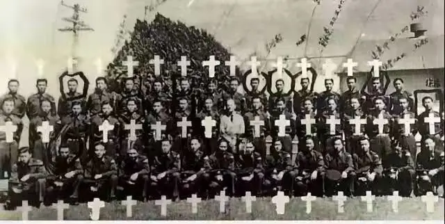

《中央航空学校第五期航空班学生名册》中，红色名字的学生，即是殉国者，李有幹名列其中。记录李有幹的殉国说明是"1937/9炸招商中栈至匯山码头阵地炮火击中殉国"。
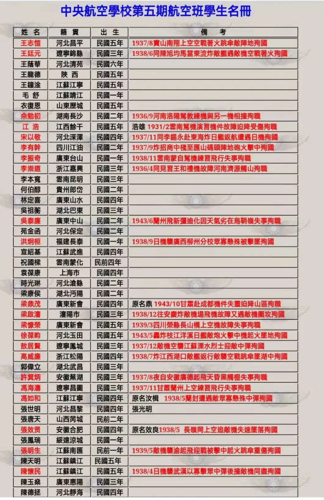
李有幹出战的具体任务，在整个飞行作战计划中最为凶险：攻击的目标是泊于黄浦江上的日军旗舰（我奶奶杨涤玄的讲述），因为旗舰的防空火炮部署最为严密。而当时的霍克III战斗轰炸机，还是一战就面世的双翼机型。驾驶这样性能落后的战机，去轰炸有强大密集高炮火力保护的日军旗舰，不论谁去，必定是大无畏视死如归的英勇壮士。
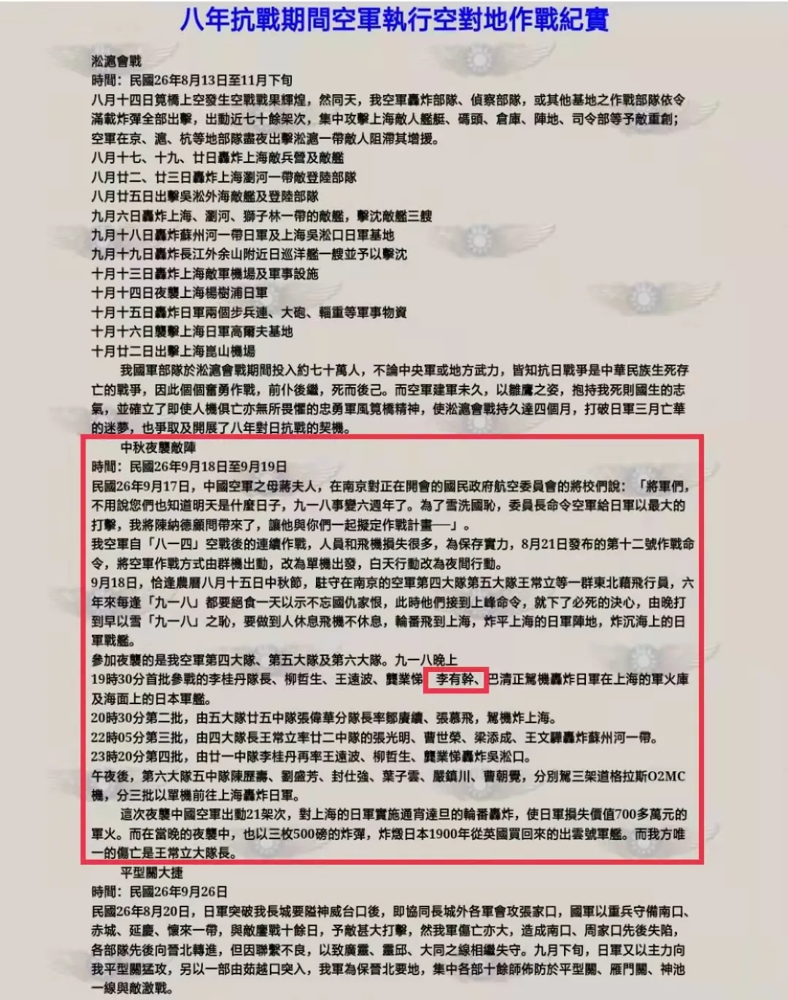
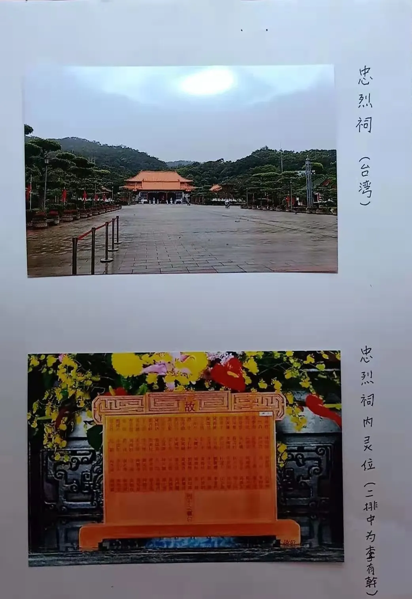
但是，从纯军事角度看，这个攻击行动，并没有多少实际战略意义。甚至说它是鲁莽的军事冒险，也不为过：用一个飞行员的生命，去赌博炸中敌人旗舰而产生轰动效应，胜算太低了！最终也是，白白的丧失了一个优秀的飞行员，一个英勇的战士，却什么也没有得到。当时极为有限的空军作战力量，难道不应该更加审慎地有效使用吗？
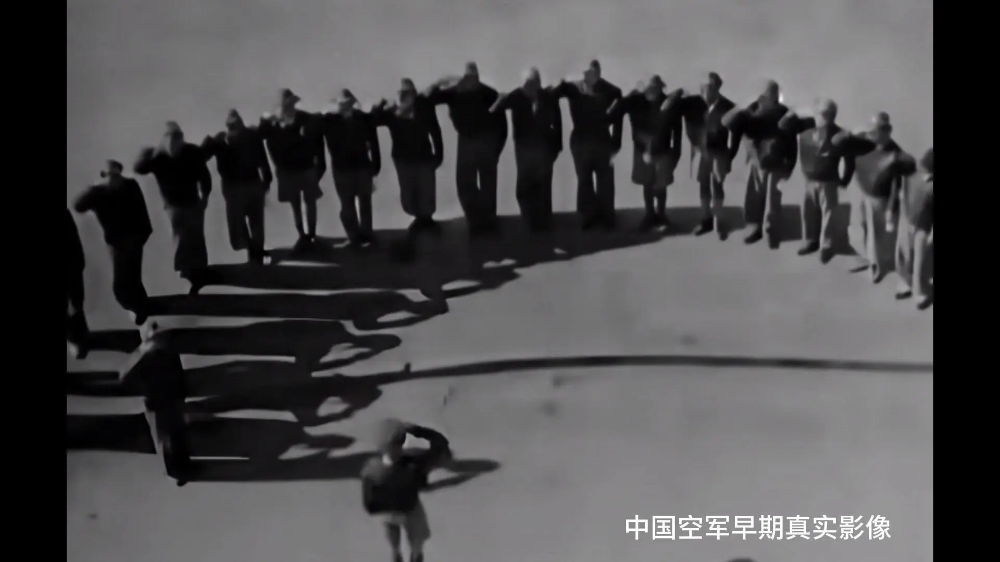
去执行这样凶险的任务，不知是李有幹主动请缨的，还是长官指定的。从他的性格来看，前者的可能性更大。毕竟，他十五岁就敢偷拿家里一大笔钱，不告而别，和另一同学远下万里之外的南洋去闯荡，在新加坡混了三年音信杳无，又身无分文独自跑回家来。然后，没在家安分几天，就又偷偷跑去杭州报考中央航空学校。
梓潼双板李氏移居到北平的第二代三兄弟，全部是叛逆胚子。大哥李有度，五四青年，放着北大西语系的书不好好念，成天上街游行去，给在警察局做事的老爸，不知添了多少堵。二哥，我爷爷李有行，老爸本来是安排他从商的，就不肯去，偏要学画画，那是老爸眼中没用的玩意儿啊，而且还要跑到大老远的法兰西去学。结果，等老爸快咽气了，他都来不及赶回来。小弟李有幹的叛逆劲头，比他俩哥哥，那是妥妥的后来者居上。还好，老爸闭眼早，没赶上看见他卷款离家，打野下南洋的壮举，不然非得气吐了血不可。当然他也没能看见，他那个蔫不吱声搞大事的小儿子，后来居然成为了战斗机飞行员，俊朗挺拔，英气逼人。

我爷爷给他最爱的小弟，专门做过一本相册，里面有很多李有幹的戎装照。然而，这本相册没能躲过"史无前例"的劫难。这是我们家一笔惨重的文化财富损失。我们家里，李有幹的照片，只有三张幸存，而且没有一张是戎装照。

上面这张照片摄于1936年上海，李有幹因训练坠机，面部受伤，门牙撞掉几颗，去上海医牙，和二哥一家留下了这张珍贵的合影。不久，我爷爷回母校北平艺专（中央美术学院的前身）任教，举家返京。李有幹当时的驻扎地在杭州笕桥机场。从此，他的驻地附近没有了亲人。好在我爷爷的好友雷奎元、刘开渠和林风眠都在杭州。这三位我爷爷的好友，也时常在家里招待李有幹。
一年之后，1937年9月23日，就在我爷爷抗战南渡转移办学途经南京时，正准备去空军机场看望他弟弟，噩耗传来：中国空军发动"九一八中秋攻势"，于1937年9月18日晚，李有幹驾机轰炸日舰，壮烈殉国，年仅24岁。
淞沪会战之前，设在杭州笕桥的中央航校和机场就迁移到了南京。但当时的战斗飞行员主力，几乎全部出自笕桥中央航校。所以上世纪七十年代台湾拍摄的抗日空战片，取名《笕桥英烈传》。片中有李有幹新婚的遗孀为他投河殉情的"艺术加工"。实际上他并没有结婚。我爷爷悲哀地去收拾他的遗物时，哪怕是表明他曾经恋爱过的物品，都一件也没有看到（我爷爷的日记《忆幹弟》）。
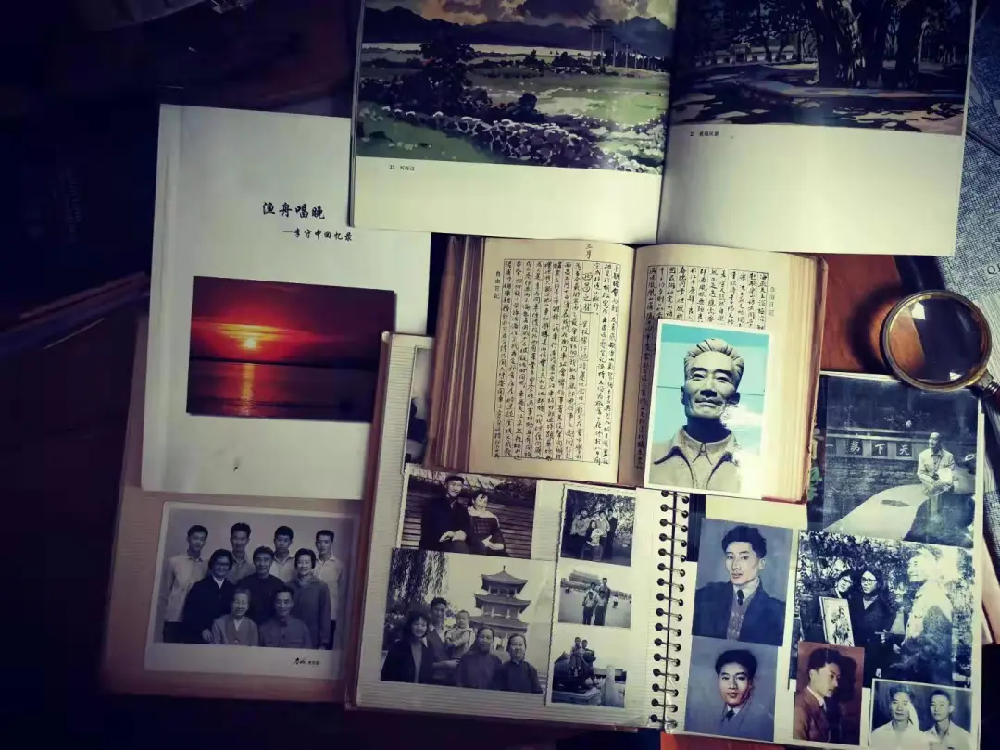
后记
这篇文章以上的部分，成稿于2021年4月18日，距1937年9月18日，已经过去了83年零7个月。当时我正计划动身去四川，去我从未去过的李家祖居地，四川梓潼县双板乡，去看望那里的乡亲，去看看那里的山水究竟是什么样子。《中央航空学校第五期航空班学生名册》上，李有幹的籍贯是四川江油，这并没有错。旧时的双板乡，是依傍川陕商道上的一个丁字路口，聚居而成。小镇被路口分隔开的三部分，分属江油、梓潼和剑阁三县（我父亲李守中回忆录《渔舟唱晚》）。李家居住在属于江油的那一部分里。1949年后，小镇整体划归梓潼县管辖。
我爷爷常跟我爸提起的"双板老家"，对我来说，也是很早就想来看看的。虽然，我以前就知道，那里其实早已没有了旧时李家的任何痕迹。
2021年4月20日，我第一次回到李家祖上居住的地方，上溯四代的祖上。
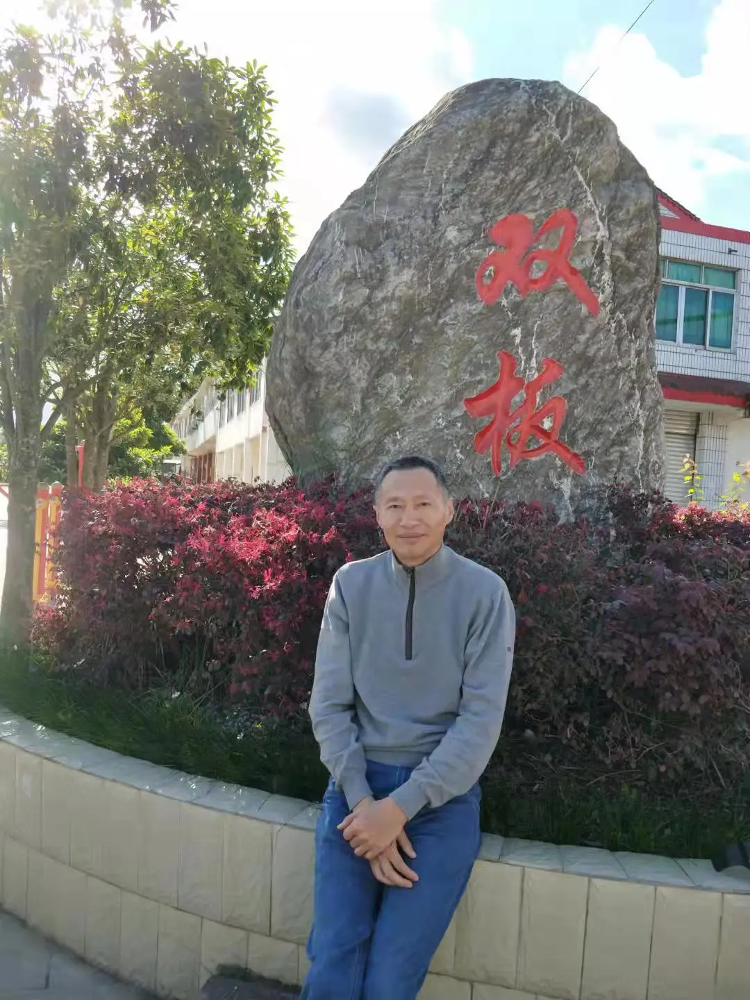
接待我的是仍居住在双板的李家姻亲朱里表哥和表嫂。居住在绵阳市的堂叔李雍宁和堂哥李志民，也赶来相会。
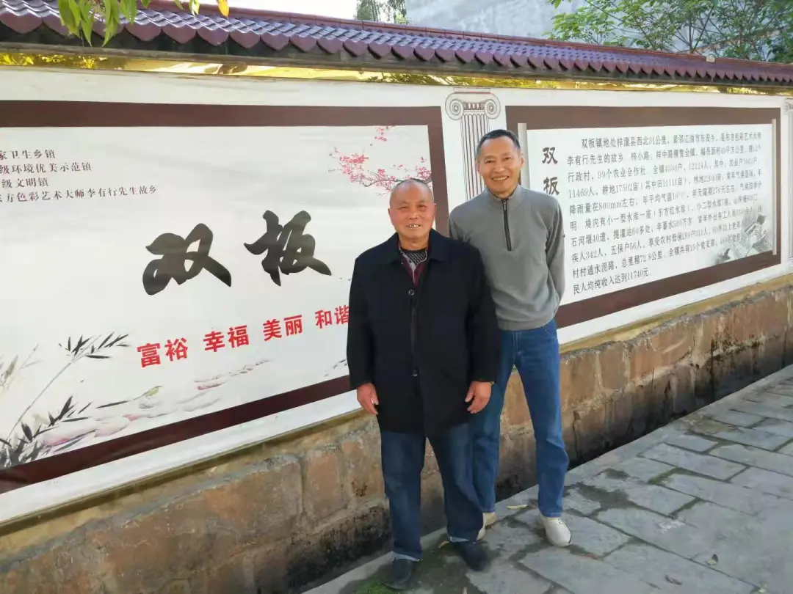
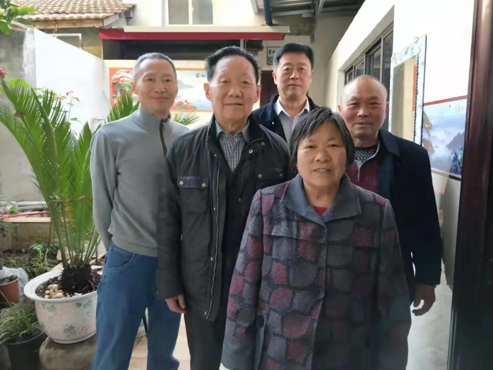
这个坐落在川北丘陵的小镇，宁静整洁。周围的景色，一如我爷爷当年笔下的画卷，依旧是那般满目青翠。
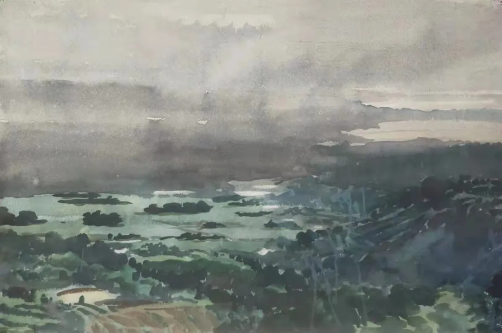
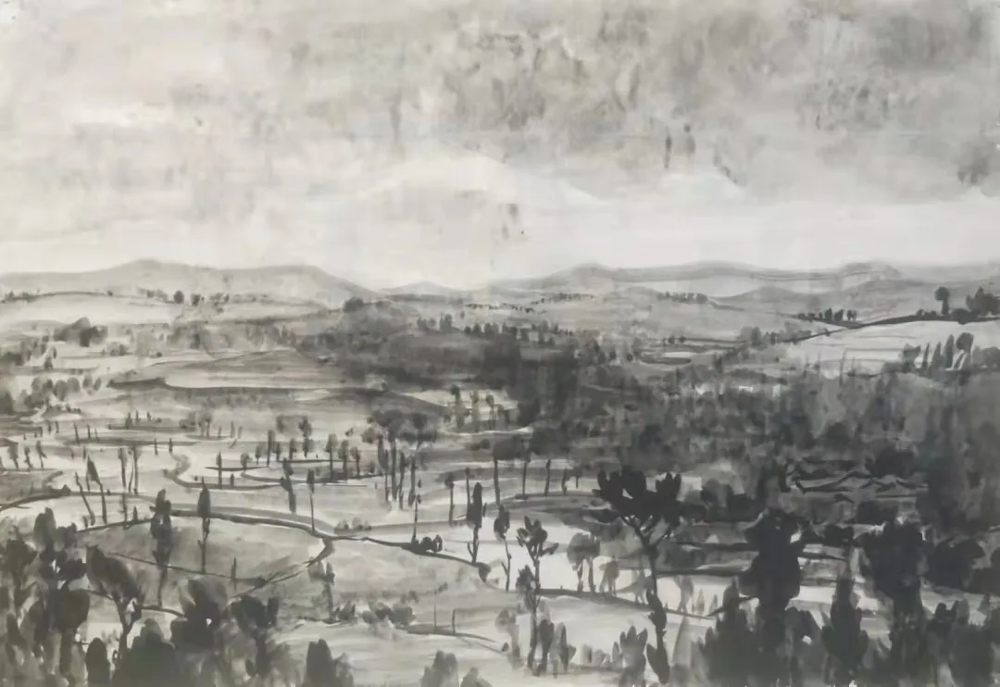
我爷爷现存的画作中，老家的风景作品不多，这是仅有的二幅家乡周围的景色，时间当在1940年至1942年之间。
我爷爷他们三兄弟，大哥李有度和二哥李有行都出生在双板，大哥去世在绵阳一中的校长任上。小弟李有幹，出生在北京，殉国在黄浦江上空，他没有回过双板。英烈已逝，人不再能归故里了，但或许将来有一天，魂能归故里？李家英烈之魂。